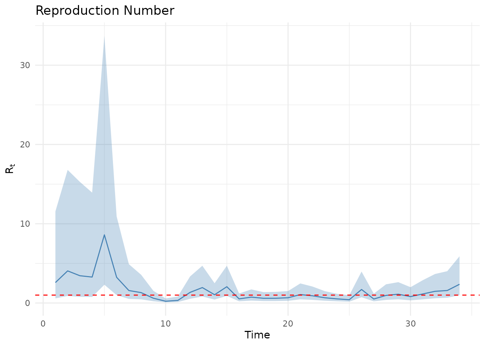
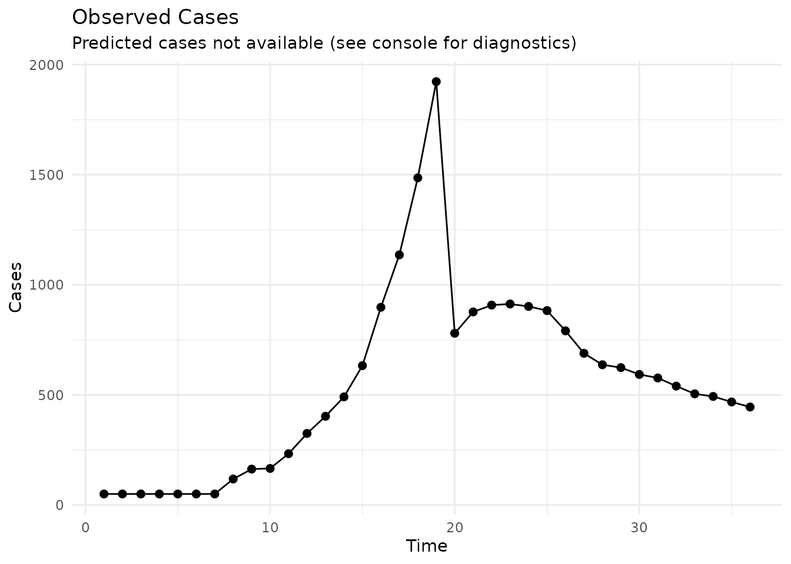
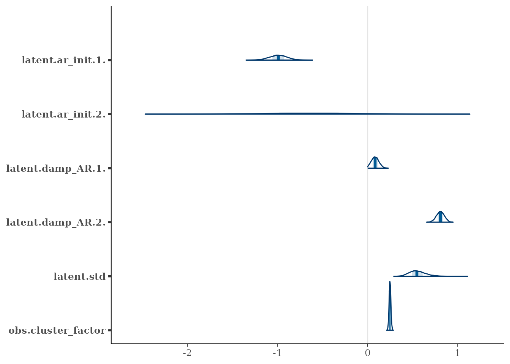

vignettes/mishra-case-study.Rmd
mishra-case-study.RmdThis vignette demonstrates how to replicate the analysis from Mishra et al. (2020) of COVID-19 transmission dynamics in South Korea using EpiAwareR. This case study showcases the compositional modelling approach by building a complete epidemiological model from three reusable components.
The analysis estimates the time-varying reproduction number () using:
For this vignette, we simulate data similar to the South Korea COVID-19 outbreak analyzed in Mishra et al. (2020):
# Simulated daily case counts
set.seed(123)
dates <- seq.Date(as.Date("2020-02-15"), by = "day", length.out = 36)
# Simulate epidemic with changing Rt (intervention effect)
infections <- numeric(36)
infections[1:7] <- 50
for (i in 8:36) {
rt <- if (i < 20) 2.5 else 0.8 # Intervention reduces transmission
infections[i] <- rpois(1, rt * mean(infections[(i - 7):(i - 1)]))
}
training_data <- data.frame(
date = dates,
y_t = pmax(infections, 1) # Ensure positive counts
)
head(training_data)
#> date y_t
#> 1 2020-02-15 50
#> 2 2020-02-16 50
#> 3 2020-02-17 50
#> 4 2020-02-18 50
#> 5 2020-02-19 50
#> 6 2020-02-20 50The AR(2) process models the evolution of log over time with temporal autocorrelation:
where .
ar2 <- AR(
order = 2,
damp_priors = list(
truncnorm(0.2, 0.2, 0, 1), # φ₁: First damping coefficient
truncnorm(0.1, 0.05, 0, 1) # φ₂: Second damping coefficient
),
init_priors = list(
norm(0, 0.2), # Initial value for lag 1
norm(0, 0.2) # Initial value for lag 2
),
std_prior = halfnorm(0.1) # σ: Innovation standard deviation
)
print(ar2)
#> <EpiAware AR(2) Latent Model>
#> Damping priors: 2
#> Init priors: 2
#> Innovation std prior: specifiedPrior choices (from Mishra et al. 2020):
The renewal equation models new infections based on past infections and generation time:
where is the discretized generation time distribution.
renewal <- Renewal(
gen_distribution = gamma_dist(6.5, 0.62), # Shape and scale parameters
initialisation_prior = norm(log(1.0), 0.1) # Prior on initial log infections
)
print(renewal)
#> <EpiAware Renewal Infection Model>
#> Generation distribution: Gamma
#> Initialisation prior: specifiedKey parameters:
Links latent infections to observed case counts with overdispersion:
where controls overdispersion (clustering).
negbin <- NegativeBinomialError(
cluster_factor_prior = halfnorm(0.1)
)
print(negbin)
#> <EpiAware Negative Binomial Observation Model>
#> Cluster factor prior: truncated(Normal(0, sd), 0, Inf)Parameterization:
model <- EpiProblem(
epi_model = renewal,
latent_model = ar2,
observation_model = negbin,
tspan = c(1, 36) # Time span matching our data
)
print(model)
#> <EpiAware Epidemiological Model>
#> Time span: 1 to 36
#> Components:
#> - Infection model: epiaware_renewal
#> - Latent model: epiaware_ar
#> - Observation model: epiaware_negbinThe EpiProblem combines components into a joint Bayesian
model with automatic validation.
We use NUTS (No-U-Turn Sampler) for posterior inference:
results <- fit(
model = model,
data = training_data,
method = nuts_sampler(
warmup = 1000, # Adaptation iterations
draws = 1000, # Posterior samples per chain
chains = 4 # Independent chains for convergence assessment
)
)
#> Generating Turing.jl model...
#> Running NUTS sampling...
#> Chains: 4
#> Warmup: 1000
#> Draws: 1000
#> Processing results...Note: Fitting typically takes 2-5 minutes on modern hardware.
print(results)
#> <EpiAware Model Fit>
#>
#> Model:
#> Time span: 1 to 36
#> Infection model: epiaware_renewal
#> Latent model: epiaware_ar
#> Observation model: epiaware_negbin
#>
#> Sampling:
#> Method: NUTS
#> Chains: 4
#> Draws: 1000 (per chain)
#>
#> Convergence:
#> Max Rhat: Inf
#> Min ESS (bulk): 4
#> Warning: Some parameters have Rhat > 1.1
#> Warning: Some parameters have ESS < 100
#>
#> Use summary() for parameter estimates
#> Use plot() to visualize resultsCheck for:
# Detailed posterior summaries
summary(results)
#> # A tibble: 53 × 10
#> variable mean median sd mad q5 q95 rhat ess_bulk ess_tail
#> <chr> <dbl> <dbl> <dbl> <dbl> <dbl> <dbl> <dbl> <dbl> <dbl>
#> 1 latent.ar… -1.48 -1.94 0.800 0.0303 -1.97 -0.0984 1.53 7.15 59.9
#> 2 latent.ar… -0.0894 -0.135 0.247 0.268 -0.453 0.256 1.52 7.23 15.2
#> 3 latent.da… 0.525 0.466 0.188 0.142 0.290 0.819 1.59 6.83 10.9
#> 4 latent.da… 0.255 0.201 0.137 0.0758 0.102 0.480 1.53 7.30 56.1
#> 5 latent.std 1.17 0.370 1.42 0.0626 0.296 3.65 1.60 6.78 11.4
#> 6 latent.ϵ_… 2.17 2.72 1.54 1.00 -0.329 3.93 1.53 7.15 20.7
#> 7 latent.ϵ_… 1.15 1.22 0.716 0.869 0.218 2.26 1.46 7.72 16.9
#> 8 latent.ϵ_… 0.320 0.283 0.573 0.788 -0.268 1.33 1.24 12.3 1511.
#> 9 latent.ϵ_… 0.227 0.347 0.488 0.366 -0.629 0.950 1.08 41.6 2023.
#> 10 latent.ϵ_… 0.599 0.371 0.879 0.822 -0.614 1.89 1.57 6.88 12.0
#> # ℹ 43 more rowsKey parameters to examine:
# Time-varying reproduction number with credible intervals
plot(results, type = "Rt")
# Observed vs predicted case counts
plot(results, type = "cases")
#> Posterior predictive samples not available.
#> This is a placeholder plot - full implementation would extract predictions from Julia.
# Posterior distributions for key parameters
plot(results, type = "posterior")
Test sensitivity to AR order:
# AR(1) alternative
ar1 <- AR(
order = 1,
damp_priors = list(truncnorm(0.5, 0.2, 0, 1)),
init_priors = list(norm(0, 0.2)),
std_prior = halfnorm(0.1)
)
model_ar1 <- EpiProblem(
epi_model = renewal,
latent_model = ar1,
observation_model = negbin,
tspan = c(1, 36)
)
results_ar1 <- fit(model_ar1, data = training_data)
#> Generating Turing.jl model...
#> Running NUTS sampling...
#> Chains: 4
#> Warmup: 1000
#> Draws: 1000
#> Processing results...
# Visual inspection of results
# Formal model comparison would require LOO cross-validation (for fit)
# or leave-future-out validation (for forecasting)
print(results)
#> <EpiAware Model Fit>
#>
#> Model:
#> Time span: 1 to 36
#> Infection model: epiaware_renewal
#> Latent model: epiaware_ar
#> Observation model: epiaware_negbin
#>
#> Sampling:
#> Method: NUTS
#> Chains: 4
#> Draws: 1000 (per chain)
#>
#> Convergence:
#> Max Rhat: Inf
#> Min ESS (bulk): 4
#> Warning: Some parameters have Rhat > 1.1
#> Warning: Some parameters have ESS < 100
#>
#> Use summary() for parameter estimates
#> Use plot() to visualize results
print(results_ar1)
#> <EpiAware Model Fit>
#>
#> Model:
#> Time span: 1 to 36
#> Infection model: epiaware_renewal
#> Latent model: epiaware_ar
#> Observation model: epiaware_negbin
#>
#> Sampling:
#> Method: NUTS
#> Chains: 4
#> Draws: 1000 (per chain)
#>
#> Convergence:
#> Max Rhat: Inf
#> Min ESS (bulk): 4
#> Warning: Some parameters have Rhat > 1.1
#> Warning: Some parameters have ESS < 100
#>
#> Use summary() for parameter estimates
#> Use plot() to visualize resultsAccount for incubation and reporting delays:
# Incubation period (~5 days)
obs_incubation <- LatentDelay(
model = negbin,
delay_distribution = lognorm(1.6, 0.42)
)
# Reporting delay (~2 days)
obs_full <- LatentDelay(
model = obs_incubation,
delay_distribution = lognorm(0.58, 0.47)
)
model_delays <- EpiProblem(
epi_model = renewal,
latent_model = ar2,
observation_model = obs_full,
tspan = c(1, 36)
)
results_delays <- fit(model_delays, data = training_data)
#> Generating Turing.jl model...
#> Running NUTS sampling...
#> Chains: 4
#> Warmup: 1000
#> Draws: 1000
#> Processing results...The Mishra et al. (2020) analysis demonstrated:
Try modifying the analysis:
Mishra, S., Berah, T., Mellan, T. A., et al. (2020). On the derivation of the renewal equation from an age-dependent branching process: an epidemic modelling perspective. arXiv preprint arXiv:2006.16487.
sessionInfo()
#> R version 4.5.2 (2025-10-31)
#> Platform: x86_64-pc-linux-gnu
#> Running under: Ubuntu 24.04.3 LTS
#>
#> Matrix products: default
#> BLAS: /usr/lib/x86_64-linux-gnu/openblas-pthread/libblas.so.3
#> LAPACK: /usr/lib/x86_64-linux-gnu/openblas-pthread/libopenblasp-r0.3.26.so; LAPACK version 3.12.0
#>
#> locale:
#> [1] LC_CTYPE=C.UTF-8 LC_NUMERIC=C
#> [3] LC_TIME=C.UTF-8 LC_COLLATE=C.UTF-8
#> [5] LC_MONETARY=C.UTF-8 LC_MESSAGES=C.UTF-8
#> [7] LC_PAPER=C.UTF-8 LC_NAME=C.UTF-8
#> [9] LC_ADDRESS=C.UTF-8 LC_TELEPHONE=C.UTF-8
#> [11] LC_MEASUREMENT=C.UTF-8 LC_IDENTIFICATION=C.UTF-8
#>
#> time zone: UTC
#> tzcode source: system (glibc)
#>
#> attached base packages:
#> [1] stats graphics grDevices utils datasets methods base
#>
#> other attached packages:
#> [1] EpiAwareR_0.1.0.9000
#>
#> loaded via a namespace (and not attached):
#> [1] tensorA_0.36.2.1 sass_0.4.10 utf8_1.2.6
#> [4] generics_0.1.4 stringi_1.8.7 digest_0.6.39
#> [7] magrittr_2.0.4 evaluate_1.0.5 grid_4.5.2
#> [10] RColorBrewer_1.1-3 fastmap_1.2.0 plyr_1.8.9
#> [13] jsonlite_2.0.0 backports_1.5.0 scales_1.4.0
#> [16] textshaping_1.0.4 jquerylib_0.1.4 abind_1.4-8
#> [19] cli_3.6.5 rlang_1.1.6 withr_3.0.2
#> [22] cachem_1.1.0 yaml_2.3.12 tools_4.5.2
#> [25] reshape2_1.4.5 checkmate_2.3.3 dplyr_1.1.4
#> [28] ggplot2_4.0.1 JuliaCall_0.17.6 vctrs_0.6.5
#> [31] posterior_1.6.1 R6_2.6.1 ggridges_0.5.7
#> [34] matrixStats_1.5.0 lifecycle_1.0.4 stringr_1.6.0
#> [37] fs_1.6.6 ragg_1.5.0 pkgconfig_2.0.3
#> [40] desc_1.4.3 pkgdown_2.2.0 pillar_1.11.1
#> [43] bslib_0.9.0 gtable_0.3.6 glue_1.8.0
#> [46] Rcpp_1.1.0 systemfonts_1.3.1 xfun_0.54
#> [49] tibble_3.3.0 tidyselect_1.2.1 knitr_1.50
#> [52] farver_2.1.2 bayesplot_1.14.0 htmltools_0.5.9
#> [55] rmarkdown_2.30 labeling_0.4.3 compiler_4.5.2
#> [58] S7_0.2.1 distributional_0.5.0